让每一滴药液，
精准落在田间
我们不造无人机。AeroGuard 是一套软件 + 植保无人机外挂模块，直接装在现有的植保无人机上：软件预测药液会飘到哪里并规划航线，外挂模块再主动把药液引回田里——少浪费、少污染，扩大可安全作业的风速窗口。
2.0 m/s 横风基线仿真结果，尚待田间验证。
无人机打药就像有风天用喷壶浇花——水雾越细，越容易被风带跑。AeroGuard 不替换你的无人机：软件先算出药会飘到哪里，装在原有无人机上的外挂再用气流把它“按”回作物上。
出田质量 10.12%：按重量算，有 10.12% 的药液被风吹出了田——越小越好。
带虚线的词可悬停或点按查看解释。

喷出去的药液，未必留在田里
风把细小液滴吹进土壤、水体和周边植物——既污染环境，又浪费药液。液滴越细，飘得越远。
飘出去的多是细小液滴：数量多、药量少，两者要分开看。最远漂移为 20 µm、无蒸发假设上限。
液滴越小，下落越慢：400 µm 的液滴 1.6 秒落地，20 µm 的细雾却要飘三分半钟，一阵微风就能把它带出几百米。
田内落点降至 84.40%，跌破 85% 达标线。
DB37/T 3940-2020：>3 m/s 慎飞，>5 m/s 不宜作业。
三重代价：污染水体生态、推高药费、只能等无风天。
AeroGuard，把药液拉回田里
飘移预测软件 + 可加装在现有植保无人机上的轻量外挂模块，目前已完成仿真与航线规划。
作业中实时获取风速与风向——就像扔球前先看看风往哪边吹。
用模型预测液滴会落在哪里、会被风推偏多远。
把喷嘴和下压气流朝迎风方向偏一点，抵消风的侧向推力。
液滴更快、更直地落到作物上，而不是飘出田外。
可以把它想成喷头上一个“会看风的吹风机”：风从左边来，就把气流往左偏一点，抵消药液的偏移。拖动右图中线可对比两种情况。
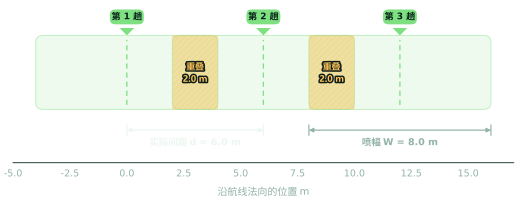
加装 AeroGuard（设计目标） 无导流 · 出田 10.12%
无导流 · 出田 10.12%液滴大小、阵风、喷杆晃动分别建模。
细网格看落药，大方块找漏喷。
项目达标线与行业风速标准分开标注。
从一颗液滴，到整片田
用连续的物理因果链解释飘移，再用沉积网格和独立核算检查模型输出。
颗代表液滴，按 Gamma 分布抽样、固定随机种子，结果可完整复现。
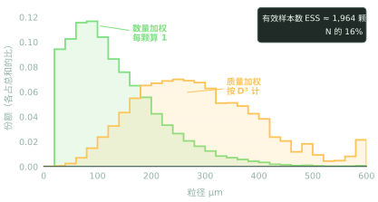
说明：校核验证的是模型实现一致性；单喷头实测已用于修正下落阶段（见下图），整机田间效果仍待试点检验。
每类随机量各用一条固定种子的随机流，改变风速不会把液滴“重新洗牌”，结果差异只来自所改的条件；落点分配权重之和为 1，所以喷出与落下的药量能对到 0.999973。
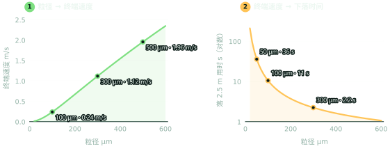
参数化液滴模型
粒径、发射时刻与阵风各用一条独立随机流抽样。
航线与沉积场
10 趟往复航线、间距 6 m，落点映射到沉积网格。
交叉核对 26 / 26
仿真模型与独立计算器的 26 项读数全部一致。
- 终端速度
- 液滴下落时，空气阻力和重力抵消后的稳定速度——就像跳伞的人下落到一定速度就不再变快。
- 沉积
- 药液最终落在地面或作物上的量，用“每平方米多少克”来表示。
- Gamma 分布
- 喷头喷出的液滴有大有小，这条曲线描述“中等大小最多，特别大和特别小的较少”。
- 守恒 0.999973
- 喷出去多少、落下来多少，账能对上，误差不到万分之一。
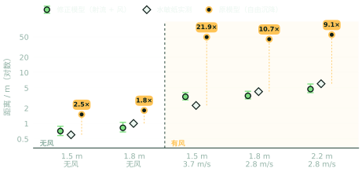
拖动风速，看药液飘向哪里
选择液滴粒径与作业条件：下落用时 = 高度 ÷ 终端速度，横向漂移 ≈ 风速 × 下落用时。
- 拖动风速滑块，看落点怎样被风越推越远。
- 切换液滴大小：20 µm 细雾几乎横着飘，600 µm 大液滴几乎直落。
- 降低喷洒高度：空中时间越短，漂移越小。
演示为单颗液滴、稳定风、未计蒸发，细雾距离为上限估计。
风每大一级，代价都看得见
同一航线与喷洒参数下的 9 档风速仿真。切换指标、悬停曲线，或点击表头排序。
阴影区分别是行业“慎飞”（>3 m/s）与“不宜作业”（>5 m/s）范围。风速从 2 升到 8 m/s，留在田里的药从约九成降到约六成。
| 风速 | 田内落点 | 出田质量 | 最远落点 | 峰值 g/m² | 行业标准 |
|---|
此处田内落点按液滴落点质量统计（2.0 m/s 为 89.88%），与按沉积网格计算的 88.98% 口径不同；最远落点为 20 µm、无蒸发假设上限。
基线达标，仍有优化空间
2.0 m/s 横风、2.5 m 高度、3.0 m/s 航速、8 m 喷幅。判据：田内沉积 ≥ 85%，低沉积方块 < 25%。
药留住了吗？88.98% 落在田里，高于 85% 及格线。
有没有漏喷？260 个 3×3 m 方块中 33 块药偏少，低于 25% 上限。
撒得匀不匀？CV 45.9% 偏高：大液滴集中落在航线正下方，这是下一步要改进的。
田内沉积占比达标
按 0.3 m 网格沉积量计算。
漏喷块率达标
3 m 作业方块中 33 / 260 块落药偏少。
变异系数 CV优化重点
沉积仍不够均匀，是下一步优化的重点。
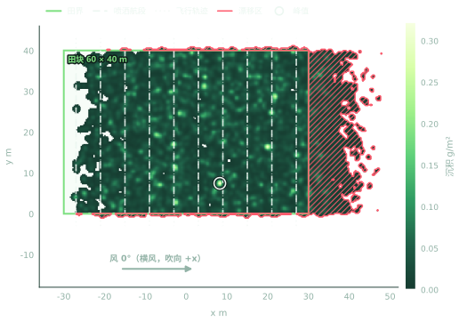
少一分飘移，多一分守护
精准植保直接关联五项联合国可持续发展目标，每项收益都对应可在田间测量的指标。
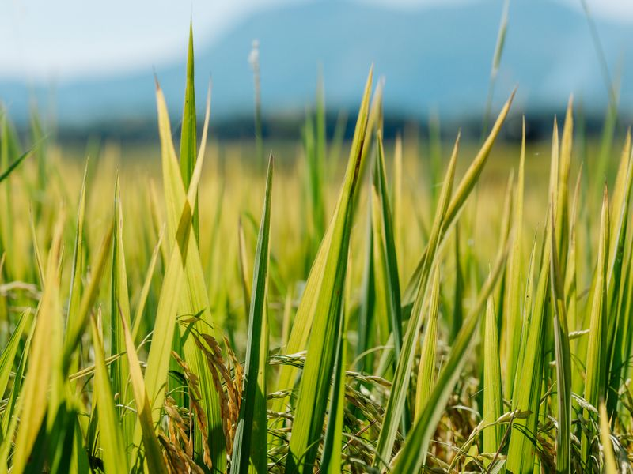
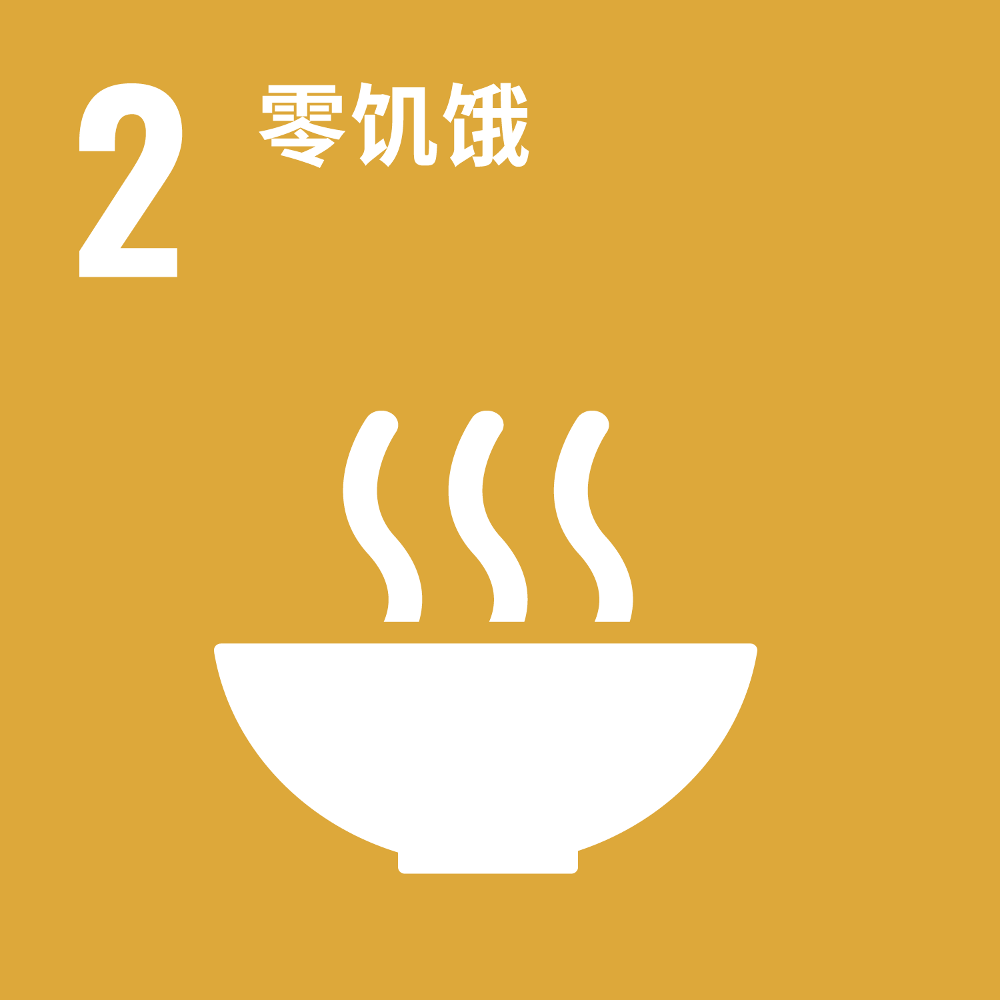
药留在作物上：仿真田内沉积 88.98%。
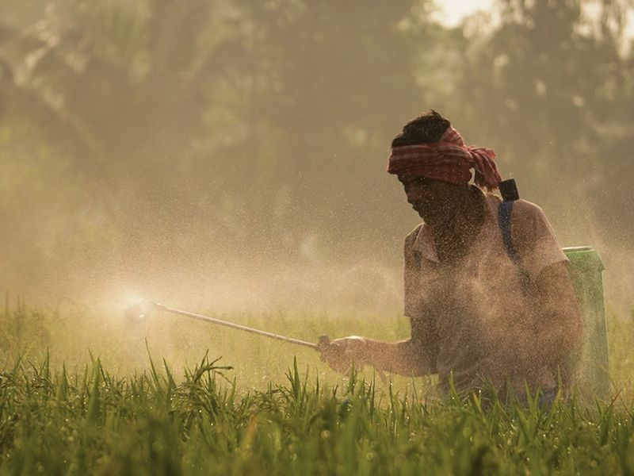
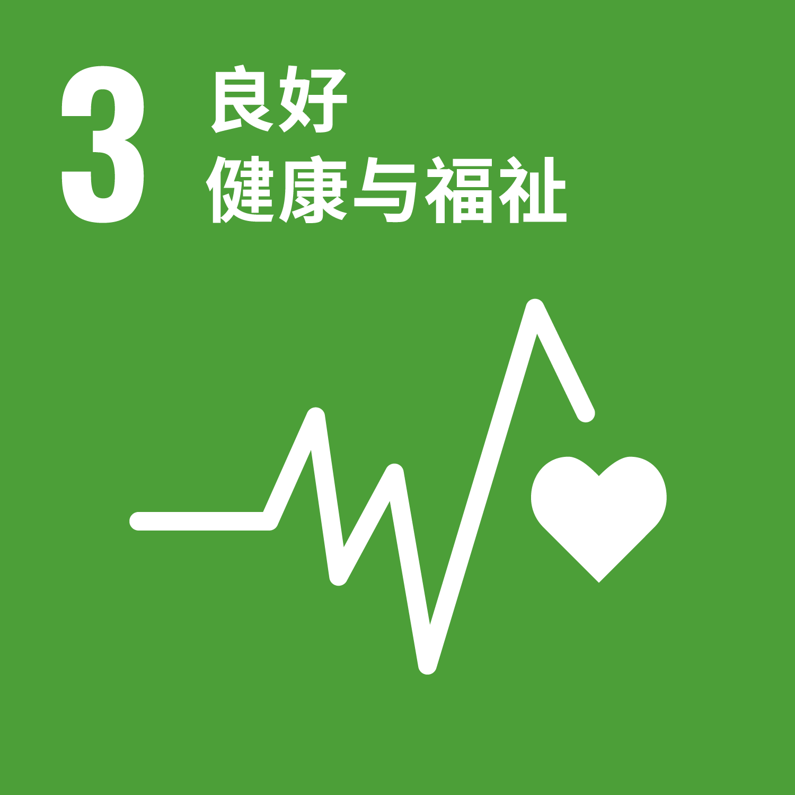
飞手和田边居民少吸药雾。
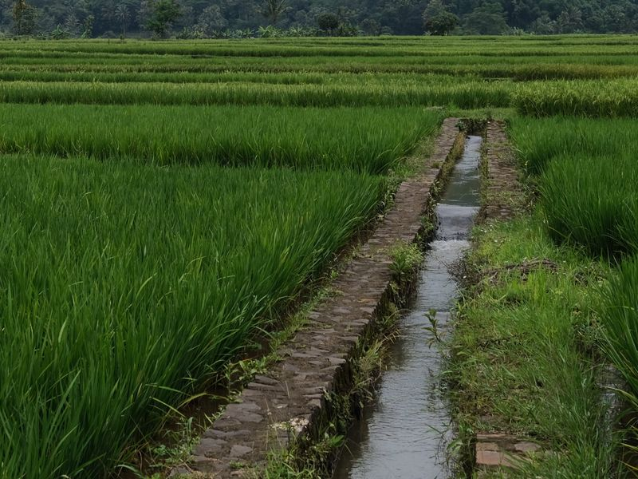
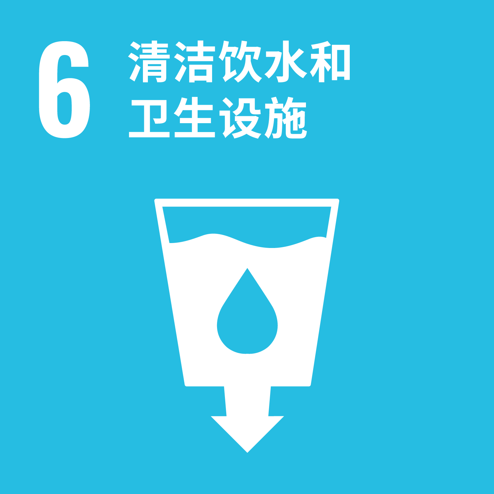
仿真出田仅 10.12%，流入河塘的药更少。
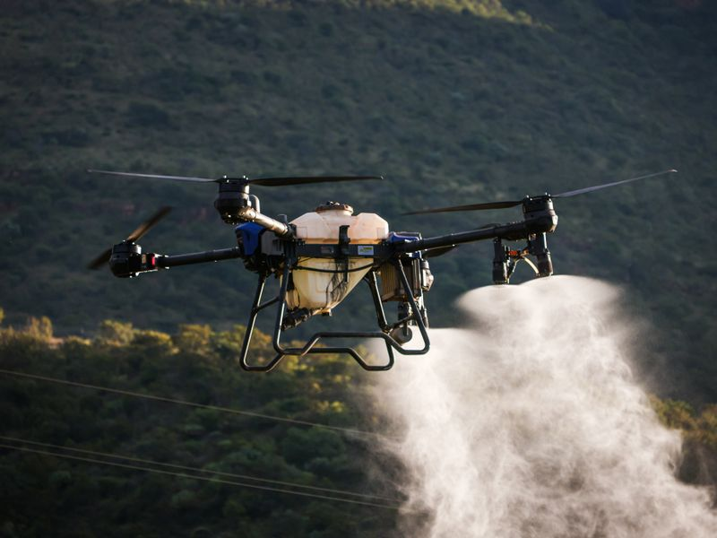
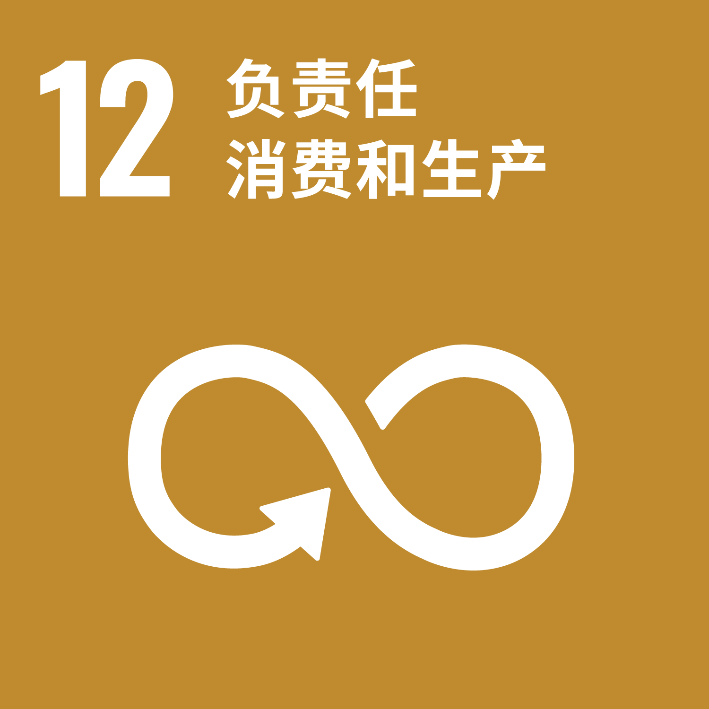
用更少的药，保住同样的收成。
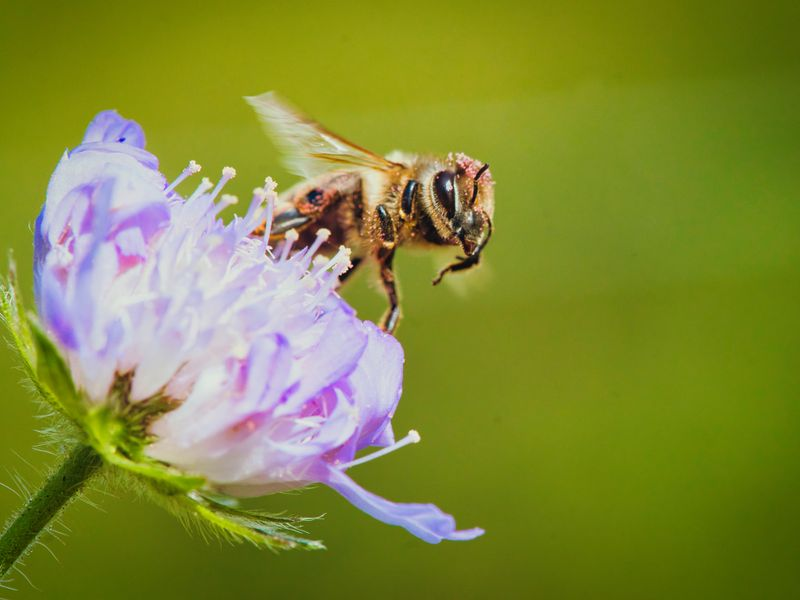
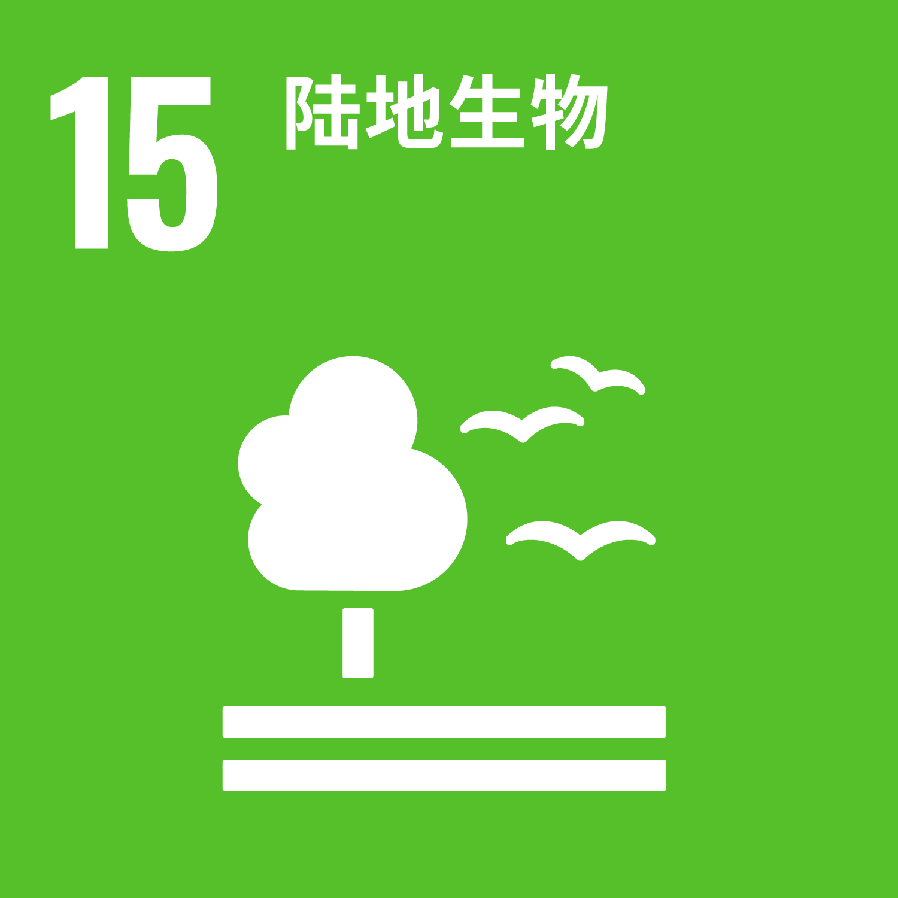
护住田边植被、土壤和传粉昆虫。
SDG 图标来自联合国。本网站内容未经联合国审核，不代表联合国及其官员或会员国的观点。照片来自 Pexels（tieugiang007、Rabindra Sundar De、hartonosbg、Magda Ehlers、Philip Klemm），仅作示意。
种植者用更少的药保住同样收成；河流、鱼塘和蜜蜂少受污染；飞手和田边居民少吸药雾。若能在更大风速下保持 85% 以上田内沉积，还能多出可作业的时间。
观测：作物落药量、漏喷区域与每亩用药量。
观测：田外落药、邻近水体与作业人员暴露。
观测：药液利用率、飘移量与周边土壤。
环境、健康与减药收益将以对照田间试验数据为准进行报告。
AeroGuard 背后的团队
我们因同一个问题走到一起：植保无人机喷洒时，风致飘移造成严重的药液浪费、非靶区暴露和环境风险。为了用基于物理的系统取代“凭经验估计”的作业方式，我们分工协作，打通算法、硬件与商业三端。
护住每一寸绿意，
让每一次喷洒更有据可依。
逐步检查模型是否算对，确认要解决的问题定义清楚。
对比不同喷头、高度和导流方式，选出最可行的。
在小块试验田里实地测量药液到底落在哪里。
用实测数据修正模型，再进入下一轮改进。
负责市场验证，搭建精益画布（Lean Canvas）并制定路演策略。
搭建交互式网站平台，把复杂的喷洒数据变成飞手易用的操作台。
主导硬件集成，负责传感器装配与气动原型调试。
开发核心仿真软件，计算液滴运动学与基于网格的沉积指标。
四条工作线像一场接力：先弄清液滴怎么落，再规划怎么飞，然后统计整片田的落药，最后由独立笔记本重写全流程，26 项读数逐位一致。